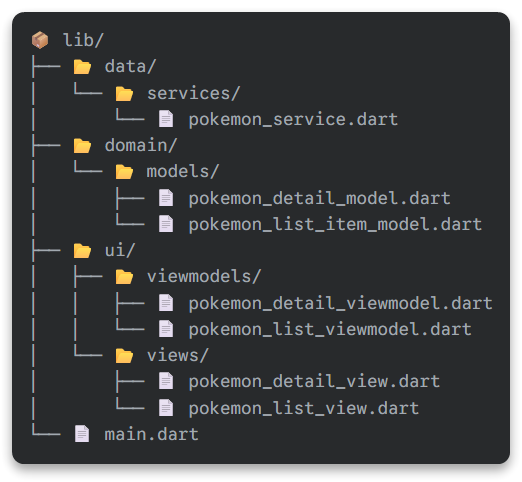
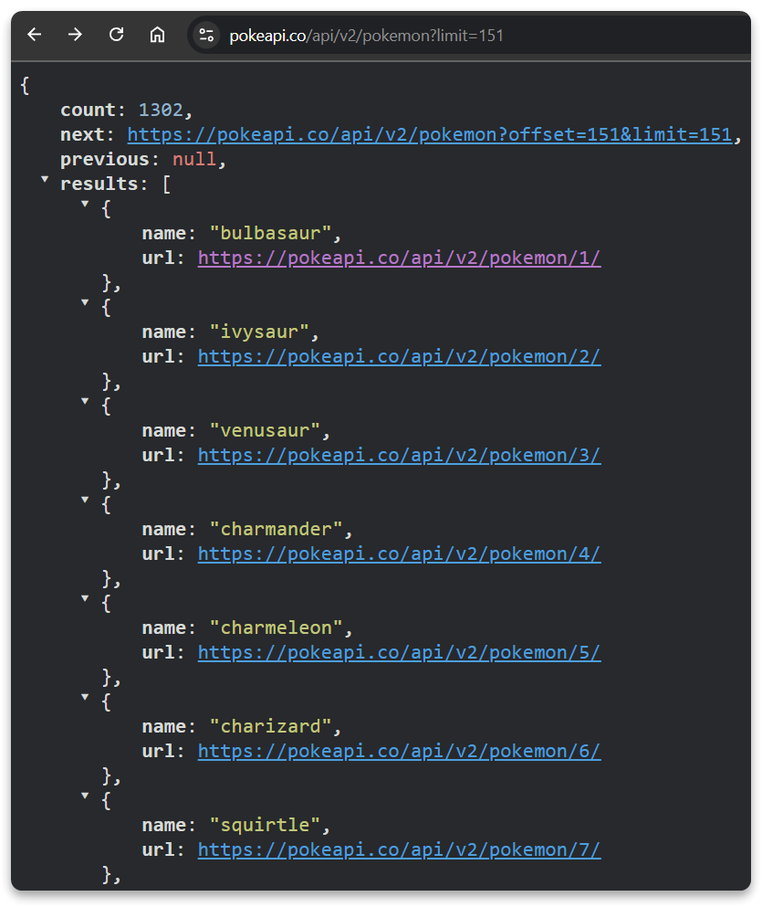
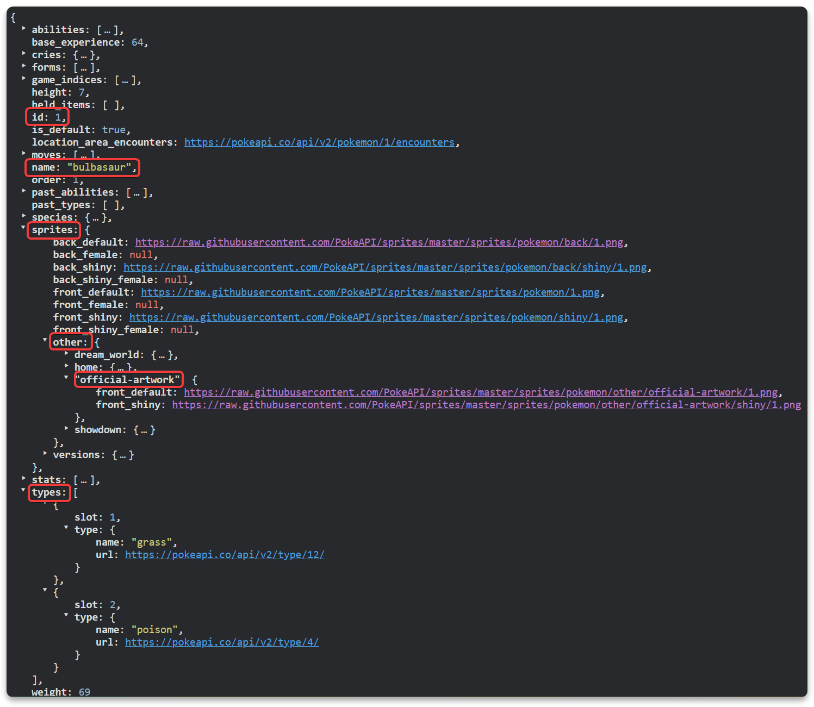
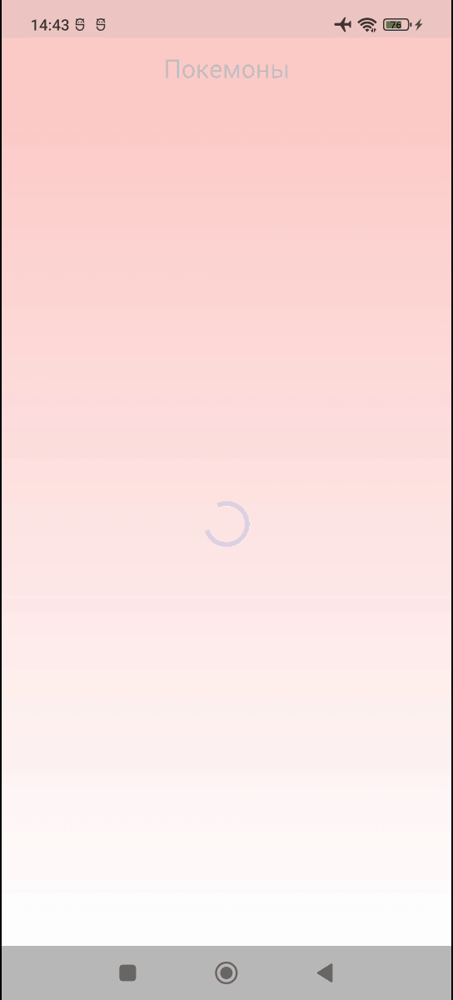
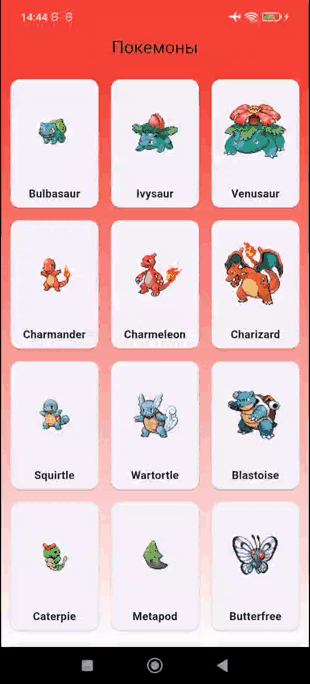
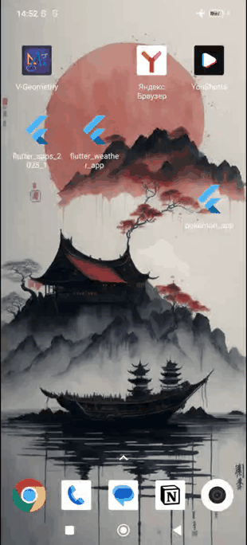

Flutter. Работа с сетью. Приложение Покемоны
Тема: Разработка Pokédex-приложения на Flutter
В этом уроке мы создадим простое приложение-каталог покемонов. Пользователь увидит список покемонов, сможет нажать на любого из них и перейти на экран с подробной информацией.


Используемый стек технологий:
- PokéAPI: Бесплатный и открытый API для получения данных о покемонах.
- Dio: Мощный клиент для выполнения сетевых запросов.
- Provider: Гибкий инструмент для управления состоянием.
- Архитектура MVVM: Для чистого, масштабируемого и понятного кода.
- Навигация: Для перехода между экранами.
Шаг 1: Настройка проекта и зависимостей
Сначала подготовим наш проект и установим необходимые библиотеки.
- Создайте новый проект Flutter с помощью
VS CodeилиAndroid Studio. - Добавьте зависимости в файл
pubspec.yaml. Нам понадобятсяdioдля сети иproviderдля управления состоянием.
pubspec.yaml


dependencies:
flutter:
sdk: flutter
dio: ^5.8.0+1
provider: ^6.1.5
dev_dependencies:
flutter_test:
sdk: flutter
flutter_lints: ^3.0.0Или установите их через терминал:
flutter pub add dio
flutter pub add providerНе забудьте выполнить flutter pub get после сохранения файла, чтобы установить пакеты.
Шаг 2: Архитектура MVVM и структура проекта
Мы будем использовать архитектуру MVVM (Model-View-ViewModel), чтобы разделить логику и пользовательский интерфейс.
- Model (Модель): Классы, описывающие наши данные. У нас будет две модели:
PokemonListItemдля элемента в списке иPokemonDetailдля подробной информации о покемоне. - View (Представление): UI-компоненты (виджеты), которые видит пользователь. У нас будет два экрана:
PokemonListView(список) иPokemonDetailView(детали). - ViewModel (Модель Представления): "Мозг" для каждого экрана.
PokemonListViewModelбудет загружать список покемонов, аPokemonDetailViewModel— детальную информацию для одного покемона. - Service (Сервис): Вспомогательный класс
PokemonService, который будет инкапсулировать всю логику общения с PokéAPI.
Структура папок и файлов

Шаг 3: Создание Моделей (Model)
Мы будем использовать два эндпоинта PokéAPI:
https://pokeapi.co/api/v2/pokemon?limit=151- для получения списка первых 151 покемона.- URL из ответа первого эндпоинта - для получения детальной информации о конкретном покемоне.
По запросу https://pokeapi.co/api/v2/pokemon?limit=151 будет представлен такой список объектов

Детальный запрос представляет собой значительно детальный JSON объект, заберём из него только некоторые данные
Например, для https://pokeapi.co/api/v2/pokemon/1/

Модель для списка покемонов
Создайте файл lib/domain/models/pokemon_list_item_model.dart:
Файл pokemon_list_item_model.dart
Dart
// Модель описывает одного покемона в общем списке.
// Содержит только имя и URL для получения детальной информации.
class PokemonListItem {
final String name; // Имя покемона
final String url; // URL для получения полной информации
PokemonListItem({
required this.name,
required this.url,
});
// Фабричный конструктор для создания экземпляра PokemonListItem из JSON.
// API возвращает список, где каждый элемент имеет формат {'name': 'baseurl', 'url': '...'}.
factory PokemonListItem.fromJson(Map json) {
return PokemonListItem(
name: json['name'] as String,
url: json['url'] as String,
);
}
} Модель для детальной информации
Создайте файл lib/domain/models/pokemon_detail_model.dart:
Файл pokemon_detail_model.dart
Dart
// Модель для детальной информации о покемоне.
class PokemonDetail {
final int id; // ID покемона
final String name; // Имя
final String imageUrl; // URL изображения
final List types; // Список типов (например, "grass", "poison")
PokemonDetail({
required this.id,
required this.name,
required this.imageUrl,
required this.types,
});
// Фабричный конструктор для парсинга JSON с детальной информацией.
factory PokemonDetail.fromJson(Map json) {
// Извлекаем список типов и преобразуем его в List.
final typesList = (json['types'] as List)
.map((typeInfo) => typeInfo['type']['name'] as String)
.toList();
return PokemonDetail(
id: json['id'] as int,
name: json['name'] as String,
// Изображение находится во вложенной структуре JSON.
imageUrl: json['sprites']['other']['official-artwork']['front_default'] as String,
types: typesList,
);
}
} Шаг 4: Реализация Сервиса (Service)
Сервис будет общаться с API, используя dio.
Добавим файл lib/data/services/pokemon_service.dart:
Файл pokemon_service.dart
Dart
import 'package:dio/dio.dart';
import '../../domain/models/pokemon_detail_model.dart';
import '../../domain/models/pokemon_list_item_model.dart';
class PokemonService {
final Dio _dio = Dio(BaseOptions(baseUrl: 'https://pokeapi.co/api/v2/'));
// Метод для получения списка покемонов.
Future> getPokemonList() async {
try {
// https://pokeapi.co/api/v2/pokemon?limit=151
//
// Выполняем GET-запрос к эндпоинту 'pokemon'.
// ?limit=151 означает, что просим API вернуть 151 покемона.
final response = await _dio.get(
'pokemon',
queryParameters: {'limit': 151},
);
if (response.statusCode == 200) {
// API возвращает JSON, где в ключе 'results' лежит список покемонов.
final List results = response.data['results'];
// Преобразуем каждый элемент списка JSON в объект PokemonListItem.
return results.map((json) => PokemonListItem.fromJson(json)).toList();
} else {
throw Exception('Не удалось загрузить список покемонов');
}
} catch (e) {
// Отлавливаем любые ошибки
throw Exception('Ошибка при загрузке: $e');
}
}
// Метод для получения детальной информации о покемоне.
// Принимает полный URL, который получили в PokemonListItem.
Future getPokemonDetails(String url) async {
try {
// Dio позволяет делать запросы по полному URL, даже если задан baseUrl.
final response = await _dio.get(url);
if (response.statusCode == 200) {
// Парсим JSON-ответ
return PokemonDetail.fromJson(response.data);
} else {
throw Exception('Не удалось загрузить детали покемона');
}
} catch (e) {
throw Exception('Ошибка при загрузке деталей: $e');
}
}
} Шаг 5: Создание ViewModel
Понадобится две ViewModel: одна для списка, другая для экрана деталей.
ViewModel для списка
Добавим файл lib/ui/viewmodels/pokemon_list_viewmodel.dart:
Файл pokemon_list_viewmodel.dart
Dart
import 'package:flutter/material.dart';
import '../../data/services/pokemon_service.dart';
import '../../domain/models/pokemon_list_item_model.dart';
class PokemonListViewModel with ChangeNotifier {
final PokemonService _pokemonService = PokemonService();
List _pokemonList = [];
bool _isLoading = false;
String? _errorMessage;
List get pokemonList => _pokemonList;
bool get isLoading => _isLoading;
String? get errorMessage => _errorMessage;
PokemonListViewModel() {
fetchPokemonList(); // Вызываем загрузку при создании ViewModel
}
// Метод для загрузки данных.
Future fetchPokemonList() async {
// 1. Устанавливаем состояние загрузки и сбрасываем ошибки
_isLoading = true;
_errorMessage = null;
notifyListeners(); // Уведомляем UI для показа индикатора загрузки
try {
// 2. Вызываем метод сервиса для получения данных.
_pokemonList = await _pokemonService.getPokemonList();
} catch (e) {
// 3. В случае ошибки, сохраняем сообщение.
_errorMessage = e.toString();
} finally {
// 4. В любом случае убираем состояние загрузки.
_isLoading = false;
notifyListeners(); // Уведомляем UI об окончании загрузки.
}
}
} ViewModel для деталей
Добавим файл lib/ui/viewmodels/pokemon_detail_viewmodel.dart:
Файл pokemon_detail_viewmodel.dart
Dart
import 'package:flutter/material.dart';
import '../../data/services/pokemon_service.dart';
import '../../domain/models/pokemon_detail_model.dart';
class PokemonDetailViewModel with ChangeNotifier {
final PokemonService _pokemonService = PokemonService();
PokemonDetail? _pokemonDetail;
bool _isLoading = false;
String? _errorMessage;
PokemonDetail? get pokemonDetail => _pokemonDetail;
bool get isLoading => _isLoading;
String? get errorMessage => _errorMessage;
// Метод для загрузки данных по конкретному URL.
Future fetchPokemonDetails(String url) async {
_isLoading = true;
_errorMessage = null;
notifyListeners();
try {
_pokemonDetail = await _pokemonService.getPokemonDetails(url);
} catch (e) {
_errorMessage = e.toString();
} finally {
_isLoading = false;
notifyListeners();
}
}
} Шаг 6: Сборка UI (View)
Теперь создадим два экрана.
Экран списка покемонов
Добавим файл lib/ui/views/pokemon_list_view.dart:
Файл pokemon_list_view.dart
Dart
import 'package:flutter/material.dart';
import 'package:provider/provider.dart';
import '../viewmodels/pokemon_list_viewmodel.dart';
import 'pokemon_detail_view.dart';
class PokemonListView extends StatelessWidget {
const PokemonListView({super.key});
@override
Widget build(BuildContext context) {
return Scaffold(
appBar: AppBar(
centerTitle: true,
title: const Text('Покемоны'),
backgroundColor: Colors.red,
),
body: Container(
decoration: const BoxDecoration(
gradient: LinearGradient(
colors: [Colors.red, Colors.white],
begin: Alignment.topCenter,
end: Alignment.bottomCenter,
),
),
child: Consumer(
builder: (context, viewModel, child) {
if (viewModel.isLoading) {
return const Center(child: CircularProgressIndicator());
}
if (viewModel.errorMessage != null) {
return Center(child: Text('Ошибка: ${viewModel.errorMessage}'));
}
if (viewModel.pokemonList.isEmpty) {
return const Center(child: Text('Нет доступных покемонов.'));
}
return const PokemonGridView();
},
),
),
);
}
} Dart
// Сетка покемонов
class PokemonGridView extends StatelessWidget {
const PokemonGridView({super.key});
@override
Widget build(BuildContext context) {
// Используем Consumer для доступа к списку покемонов из ViewModel
return Consumer(
builder: (context, viewModel, child) {
if (viewModel.pokemonList.isEmpty &&
viewModel.errorMessage == null &&
!viewModel.isLoading) {
return const Center(child: Text('Нет доступных покемонов.'));
}
if (viewModel.errorMessage != null) {
return Center(child: Text('Ошибка: ${viewModel.errorMessage}'));
}
return GridView.builder(
padding: const EdgeInsets.all(8.0),
gridDelegate: const SliverGridDelegateWithFixedCrossAxisCount(
crossAxisCount: 3, // 3 столбца
crossAxisSpacing: 8.0,
mainAxisSpacing: 8.0,
childAspectRatio: 0.7,
),
itemCount: viewModel.pokemonList.length,
itemBuilder: (context, index) {
final pokemon = viewModel.pokemonList[index];
return PokemonGridItem(pokemon: pokemon);
},
);
},
);
}
} Dart
// Карточка покемона
class PokemonGridItem extends StatelessWidget {
final pokemon;
const PokemonGridItem({super.key, required this.pokemon});
@override
Widget build(BuildContext context) {
// получить ID покемона из строки URL между двумя слешами в самом конце
final pokemonId = pokemon.url.split('/')[pokemon.url.split('/').length - 2];
// Формируем URL для изображения
final imageUrl = 'https://raw.githubusercontent.com/PokeAPI/sprites/master/sprites/pokemon/$pokemonId.png';
return GestureDetector(
onTap: () {
Navigator.push(
context,
MaterialPageRoute(
builder: (context) => PokemonDetailView(pokemonUrl: pokemon.url),
),
);
},
child: Card(
child: Column(
mainAxisAlignment: MainAxisAlignment.center,
children: [
Expanded(
child: Padding(
padding: const EdgeInsets.all(8.0),
child: Image.network(
imageUrl,
fit: BoxFit.contain,
// Показать ошибку при загрузке изображения
errorBuilder: (BuildContext context, Object exception, StackTrace? stackTrace) {
return Column(
children: [
const Icon(
Icons.error_outline,
color: Colors.red,
size: 40,
),
Text("Ошибка загрузки", textAlign: TextAlign.center),
],
);
},
),
),
),
Padding(
padding: const EdgeInsets.only(
bottom: 8.0,
left: 4.0,
right: 4.0,
),
child: Text(
// Первая буква заглавная
pokemon.name[0].toUpperCase() + pokemon.name.substring(1),
textAlign: TextAlign.center,
style: const TextStyle(fontWeight: FontWeight.bold),
overflow: TextOverflow.ellipsis,
),
),
],
),
),
);
}
} Экран детальной информации
Добавим файл lib/ui/views/pokemon_detail_view.dart:
Файл pokemon_detail_view.dart
Dart
import 'package:flutter/material.dart';
import 'package:provider/provider.dart';
import '../viewmodels/pokemon_detail_viewmodel.dart';
class PokemonDetailView extends StatelessWidget {
final String pokemonUrl;
const PokemonDetailView({super.key, required this.pokemonUrl});
@override
Widget build(BuildContext context) {
// Создаем и предоставляем `PokemonDetailViewModel` только для этого экрана.
// Это хороший способ инкапсулировать логику, специфичную для одного виджета.
return ChangeNotifierProvider(
// Создаем `PokemonDetailViewModel` и сразу вызываем `fetchPokemonDetails` с полученным URL покемона.
// Модель будет загружать данные покемона сразу после создания
create: (context) =>
PokemonDetailViewModel()..fetchPokemonDetails(pokemonUrl),
child: Scaffold(
appBar: AppBar(
backgroundColor: Colors.red,
title: Consumer(
builder: (context, viewModel, child) {
// Показываем имя покемона, если оно загружено
return Text(
viewModel.pokemonDetail?.name.toUpperCase() ?? 'Загрузка...',
);
},
),
),
body: Container(
decoration: const BoxDecoration(
gradient: LinearGradient(
colors: [Colors.red, Colors.white],
begin: Alignment.topCenter,
end: Alignment.bottomCenter,
),
),
child: Consumer(
builder: (context, viewModel, child) {
if (viewModel.isLoading) {
return const Center(child: CircularProgressIndicator());
}
if (viewModel.errorMessage != null) {
return Center(child: Text('Ошибка: ${viewModel.errorMessage}'));
}
if (viewModel.pokemonDetail == null) {
return const Center(child: Text('Нет данных о покемоне.'));
}
// Если ошибок нет и данные загружены, получаем их
final detail = viewModel.pokemonDetail!;
return Center(
child: Column(
mainAxisAlignment: MainAxisAlignment.center,
children: [
// Показываем изображение покемона.
Image.network(
detail.imageUrl,
height: 250,
fit: BoxFit.contain,
),
const SizedBox(height: 20),
Text(
detail.name.toUpperCase(),
style: const TextStyle(
fontSize: 28,
fontWeight: FontWeight.bold,
),
),
const SizedBox(height: 10),
Text(
// Объединяем список типов в строку через запятую
'Тип покемона: ${detail.types.join(', ')}',
style: const TextStyle(
fontSize: 20,
fontStyle: FontStyle.italic,
),
),
],
),
);
},
),
),
),
);
}
} Шаг 7: Собираем все вместе в main.dart
Файл main.dart
Dart
import 'package:flutter/material.dart';
import 'package:provider/provider.dart';
import 'ui/viewmodels/pokemon_list_viewmodel.dart';
import 'ui/views/pokemon_list_view.dart';
void main() {
runApp(const MyApp());
}
class MyApp extends StatelessWidget {
const MyApp({super.key});
@override
Widget build(BuildContext context) {
// ChangeNotifierProvider делает PokemonListViewModel доступным для всех
// дочерних виджетов, в данном случае для всего приложения.
return ChangeNotifierProvider(
create: (context) => PokemonListViewModel(),
child: MaterialApp(
title: 'Pokedex',
theme: ThemeData(
primarySwatch: Colors.red,
visualDensity: VisualDensity.adaptivePlatformDensity,
),
home: const PokemonListView(),
),
);
}
}Шаг 8: Запуск и демонстрация
ПРИМЕЧАНИЕ: Ссылка на репозиторий с кодом проекта
Ветка master
https://gitflic.ru/project/igarett/flutter_course_2025_http_pokemon
- При запуске приложения сразу происходит запрос на сервер и загрузка данных
- Список покемонов можно листать, изображения подгружаются в процессе
- Можно перейти на экран с подробной информацией, там данные так же загружаются через сеть

- Если в процессе использования приложения пропал интернет, изображения не будут загружаться, будет показано сообщение об ошибке

- Если включить приложение без интернета список покемонов не будет загружен, будет сообщение об ошибке
